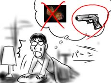
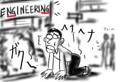
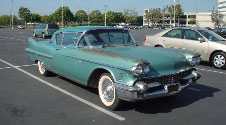
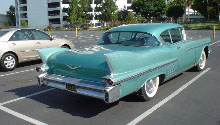

今日はインディペンデンス・ディです．
アメリカでは数少ない国民の休日なので，さぞかし街は混み合っているんだろうと思っていたのですが，逆にどこもかしこも休むので，道やモールはガラガラもいいところでした．
というわけで，ホテルで静かにしていたのですが，夕暮れ時にどこからともなく花火の音が聞こえてきました．みんな仕事を休んで集まって，花火を眺めるのがこの日の恒例のようです．TVでも，どこかの花火の様子を中継しています．
なるほど，来年は花火を見に出かけるのもいいかもなぁ，と思っていたのですが，途中から花火の音に混じって救急車のサイレンが聞こえ始めたので，やっぱり家で大人しくしてようと思いました．

今日は，明日がインディペンデンス・ディということで会社はお休みです(世間的にはおそらく7/4のみ)．
というわけで，せっかくだからフリーウェイ初体験をかねて，UCLA(カルフォルニア大学ロサンジェルス校)まで出かけて来ました．僕は初めての海外旅行でも大学を見学した(事実)ほどの大学好き，というわけでは全然なくて，むしろ大学生協の専門書コーナーが大好きです(微妙に困った性癖)．
フリーウェイはスピードを出すのでドキドキだ！と思っていたのですが，すごく渋滞していたので，別になんともなかったです．
UCLA構内に駐車してキャンパスに出たところ，すぐ目の前がやっぱり工学部だった時は，さすがに自分の生まれついた運命を呪わずにはいられませんでした(証拠写真)．

カラっと晴れた青空の下，UCLAのだだっ広いキャンパスには若い男女があふれ，大学南のWestwood通り沿いには，お洒落なお店や映画館などが立ち並ぶ…．僕の大学時代に無かったものが全てある，という感じで逆に爽快です．そんな中，GAME & ANIMEのCOSMO GAMES(写真)だけは僕らの味方だね！
クラムプ先生が大人気でしたよ(入ったのか)．
そして，Westwood通りは1時間，大学生協2時間というのは，あきらかに観光として間違っています．
朝，会社の駐車場で見かけたイカすカー．こういうのが普通に公道を走ってるからたまりません．

上の写真を撮ってその足で居室に向ったため，今日は一日デジカメ(CyberShot U)を机の上に置いておいたのですが，それを見かけた人は皆「うわ，小さいね！それデジカメ？！」「キュート！」「これいくら？」と，いつになく声をかけてきます．やった！モテモテだ！(デジカメが)．こちらの人はデジカメに弱かったのか！見切った！(見切れてない)
というわけで，渡米の際には小さいデジカメは必須です．1日限り有効です．
{kind=link}
{kind=link}